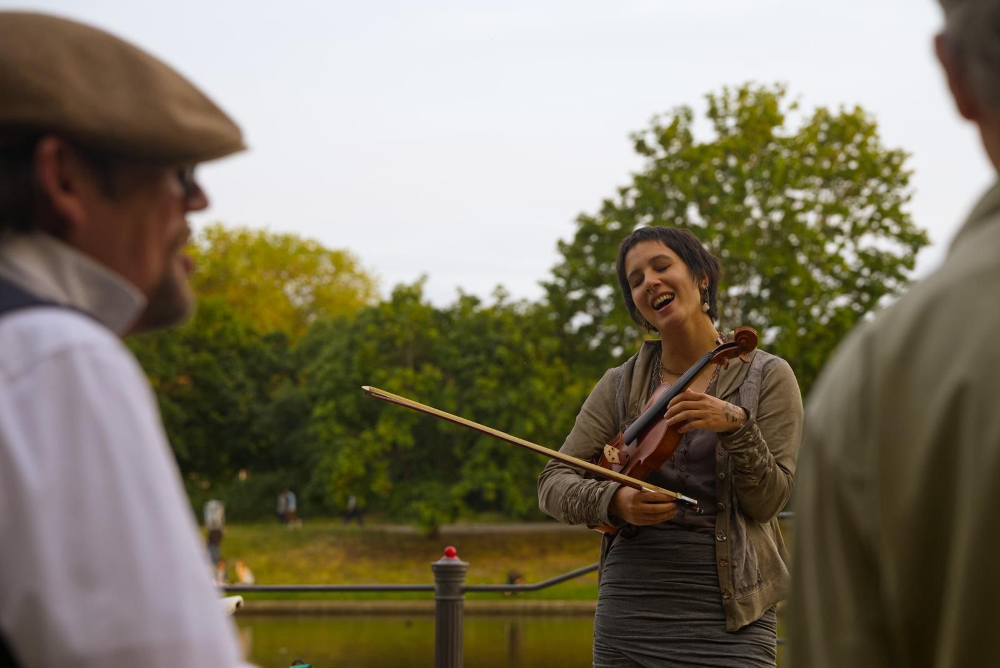
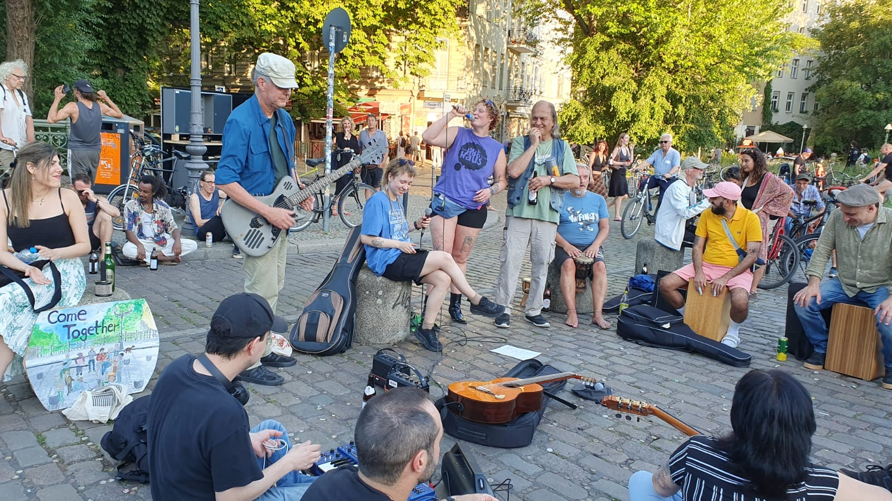
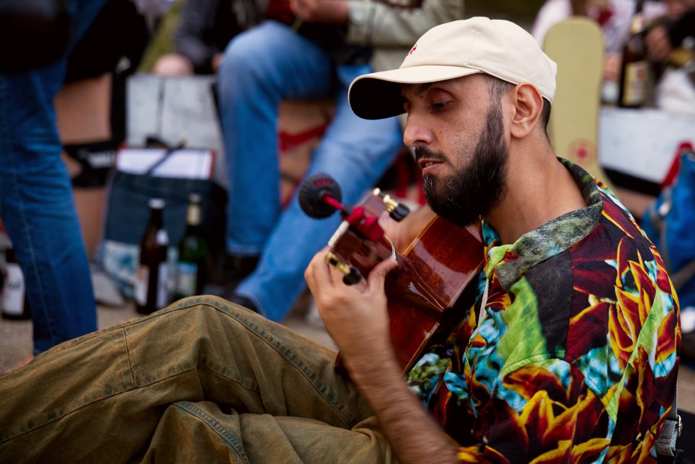
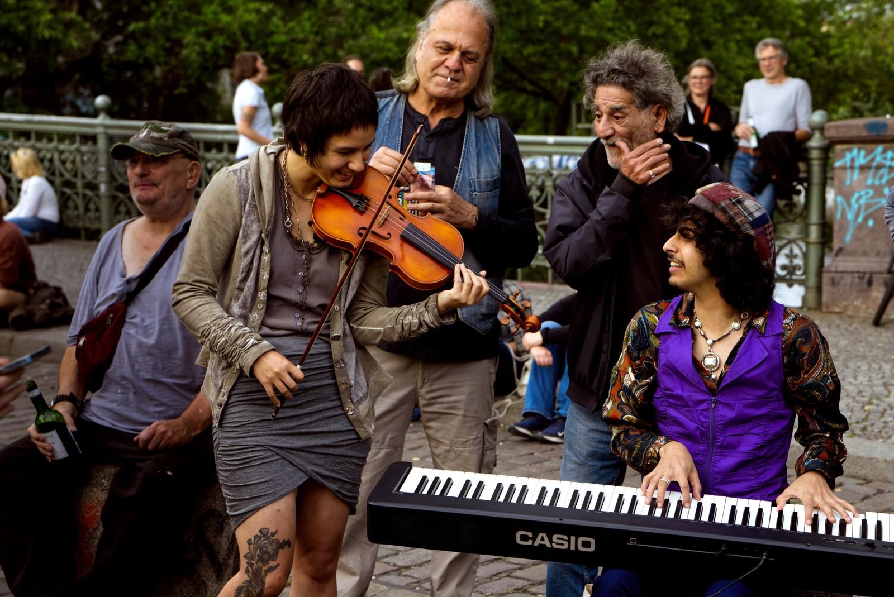
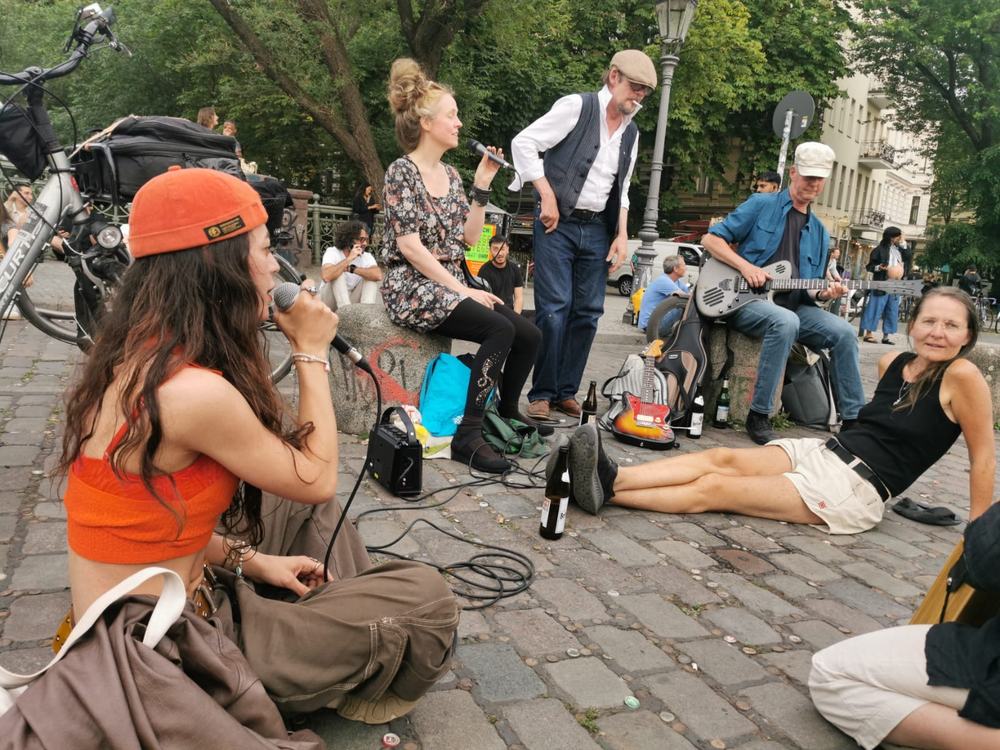
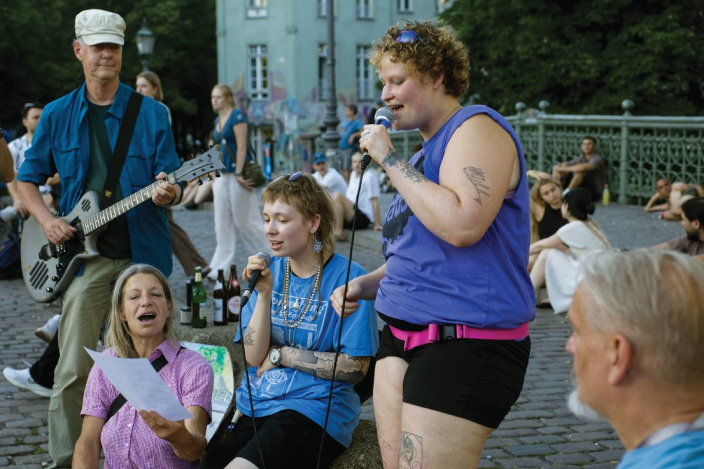
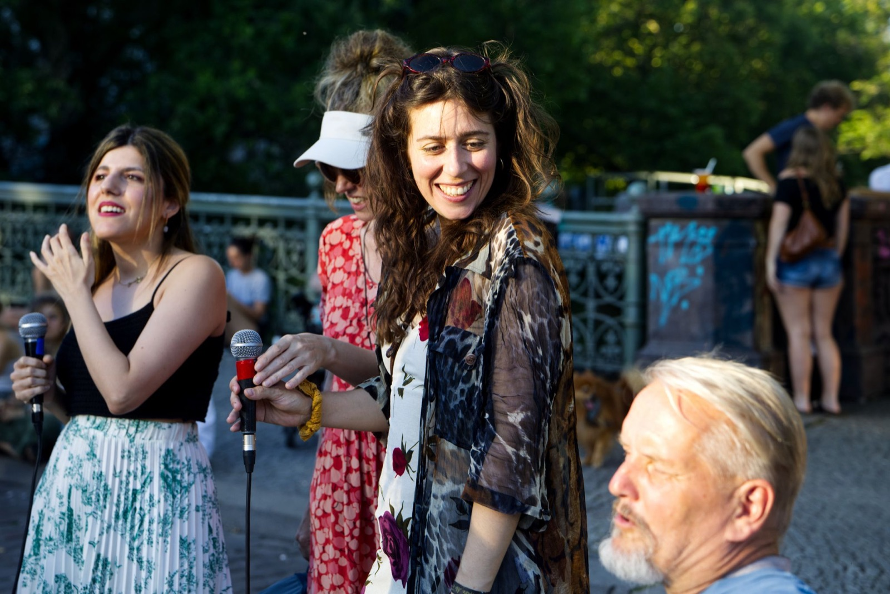

Berlin-Kreuzberg · Landwehrkanal
Kultur Ort Admiralbrücke
Musik als verbindende Sprache. Ein offenes Musizieren für alle – jung und alt, zuhörend, mitspielend, tanzend. Seit Jahren, mitten in Kreuzberg. Music as a language that connects. Open music-making for everyone – young and old, listening, playing along, dancing. For years, in the middle of Kreuzberg.
[ als Versammlung angemeldet ] [ registered as an assembly ]
Eine Brücke ist zum Überqueren da. Diese hier ist zum Bleiben. A bridge is for crossing. This one is for staying.
Die Admiralbrücke steht sinnbildlich wie historisch für das Überwinden von Gegensätzen – für Begegnung und Verständigung. Verkehrsberuhigt, mit Sitzpollern, Wasser und Abendsonne, umgeben vom ständigen Treiben dieses Knotenpunkts, ist sie seit Jahren einer der ganz wenigen Orte der Stadt, an denen man einfach verweilen, Menschen kennenlernen und Freude teilen kann.
Die Menschen wechseln, unter den Zuhörenden wie unter den Musizierenden – es ist ein Kommen und Gehen mit immer wieder überraschenden Momenten: Kinder tanzen, staunen, bekommen ein Instrument in die Hand. Jemand fängt an zu rappen, nur für ein Lied. Eine Frau kommt dazu und singt, man begleitet sie. Alle verstehen diese Sprache – auch und besonders die Kinder.
Symbolically and historically, the Admiralbrücke stands for overcoming divides – for encounter and understanding. Traffic-calmed, with bollards to sit on, water and evening sun, surrounded by the constant bustle of this crossing point, it has been one of the very few places in the city where you can simply linger, meet people and share joy.
People come and go, among the listeners as among the musicians – with surprising moments again and again: children dance, marvel, get handed an instrument. Someone starts rapping, just for one song. A woman joins in and sings, and the circle accompanies her. Everyone understands this language – especially the children.
verkehrsberuhigt / wasser + abendsonne / sitzpoller / kioske, eisdiele, pizzeria / öffentliche toilette / ständiges flanieren
traffic-calmed / water + evening sun / bollards to sit on / kiosks, ice cream, pizza / public toilet / constant strolling

D-Jam: Vierzehn Nationen, ein Rhythmus. D-Jam: Fourteen nations, one rhythm.
An open jam. All ages, all levels, all languages. Bring an instrument – or just yourself.
Die D-Jam ist ein gemeinschaftliches Musizieren in moderater Lautstärke, in das alle Menschen am Ort einbezogen werden – durch Zuhören, Mitwirken, Kontakteknüpfen, Tanzen, Genießen. Musiker und Musikerinnen aus vierzehn Nationen, aus Ost und West, Nord und Süd, kommen hier regelmäßig zusammen, um Gemeinsamkeit zu erleben und Lebendigkeit in die Welt zu tragen.
Das in Zeiten des Krieges, der gesellschaftlichen Verhärtungen, der sozialen Verarmung. Es hat sich gezeigt: Musik ist unser aller Sprache, durch die Menschen in Kontakt treten können – direkt, menschlich, respektvoll.
The D-Jam is communal music-making at moderate volume that draws in everyone around – through listening, joining in, making contact, dancing, enjoying. Musicians from fourteen nations, from East and West, North and South, come together here regularly to experience community and carry liveliness into the world.
And that in times of war, of social hardening, of social impoverishment. One thing has become clear: music is everyone's language, a way for people to connect – directly, humanly, respectfully.
alle altersgruppen / moderate lautstärke / offen für alle / handgemachte musik
all ages / moderate volume / open to everyone / handmade music



Ein Kommen und Gehen A coming and going



Mediation, Lärmomat, 22-Uhr-Regel: alles schon versucht. Mediation, noise meter, 10 p.m. rule: all been tried.
Der Streit um die Brücke ist viel älter als die D-Jam. Seit bald zwanzig Jahren probiert die Stadt Antworten auf dieselbe Frage aus – und eine hat noch niemand versucht: den Ort als das anzuerkennen, was er längst ist. Ein Kulturort. The argument about this bridge is much older than the D-Jam. For almost twenty years the city has been trying answers to the same question – and one answer no one has tried yet: recognizing the place as what it has long been. A place of culture.
-
1882
Die Admiralbrücke wird fertig – eine genietete Eisenkonstruktion von Georg Pinkenburg. Heute steht sie unter Denkmalschutz. The Admiralbrücke is completed – a riveted iron arch by engineer Georg Pinkenburg. Today it is a listed monument.
-
1990er1990s
Der Bezirk sperrt die Brücke mit Pollern für den Durchgangsverkehr. Die Verkehrsberuhigung macht sie erst zu dem Treffpunkt, der sie heute ist. The district closes the bridge to through traffic with bollards. That traffic calming is what turns it into the meeting place it is today.
-
2007
Ein rbb-Film macht die Brücke stadtbekannt; sie taucht in Reiseführern auf und wird zum Ort für den Sonnenuntergang. An rbb documentary makes the bridge famous city-wide; it shows up in travel guides and becomes the sunset spot.
-
2008
An Sommerabenden sitzen bis zu 250 Menschen auf der Brücke. Erste Beschwerden, eine Anwohnerinitiative gründet sich. Eine Anwohnerversammlung beschließt einen Kompromiss – die Verkehrsberuhigung bleibt. On summer evenings up to 250 people sit on the bridge. First complaints, a residents' initiative forms. A residents' assembly agrees on a compromise – the traffic calming stays.
-
2010
Senatsfinanzierte Mediatoren arbeiten direkt auf der Brücke, dreimal pro Woche. Im August eskaliert ein Einsatz: rund hundert Polizisten räumen die Brücke, tags darauf kommt der Regierende Bürgermeister persönlich vorbei. Seitdem gilt die Praxis: um 22 Uhr ist Schluss. Senate-funded mediators work directly on the bridge, three times a week. In August one operation escalates: around a hundred officers clear the bridge; the next day Berlin's Governing Mayor visits in person. Since then the practice stands: at 10 p.m. it's over.
-
2023
Der Bezirk stellt den „Lärmomat“ auf: eine Mooswand mit Lärmampel, die nachts gegen einen 55-dB(A)-Schwellwert misst und bei Überschreitung rot leuchtet. Anwohner halten ihn für überflüssig – „die Polizei kam doch sowieso schon jeden Abend“. The district installs the "Lärmomat": a moss wall with a noise traffic light, measuring nights against a 55 dB(A) threshold and glowing red when exceeded. Residents call it pointless – "the police came every evening anyway".
-
2024
Bilanz des Bezirksamts nach drei Monaten Lärmomat: 63 Stunden über dem Schwellwert, keine nachweisbare Lärmminderung. Das Projekt wird beendet, das Gerät abgebaut. The district's verdict after three months of Lärmomat: 63 hours above the threshold, no demonstrable noise reduction. The project is ended, the device removed.
-
2026
Jam-Sessions werden regelmäßig polizeilich beendet; im Juni wird eine Musikerin festgenommen. Die D-Jam meldet ihre Abende seither als Versammlung an – und beantragt beim Kulturausschuss die Anerkennung der Brücke als Kulturort. Jam sessions are regularly shut down by police; in June a musician is arrested. Since then the D-Jam registers its evenings as assemblies – and asks the district culture committee to recognize the bridge as a place of culture.
Quellen:Sources: Wikipedia · taz 2010 · Tagesspiegel 2011 · Berliner Zeitung 2023 · Bezirksamt 2024 · Tagesspiegel 2026
Wir wollen keinen Streit. Wir wollen spielen. We don't want a fight. We want to play.
Vier bis fünf Anwohner eines benachbarten Hauses – so sagt es die Polizei – haben sich für einen Kampf gegen die Musik entschieden. Regelmäßig, oft schon am Nachmittag, wird die Polizei gerufen und eine Anzeige verlangt. Das führt zum Abbruch der Musik, manchmal zur Räumung der Brücke, zu Festnahmen und angedrohter Konfiszierung von Instrumenten.
Aus Gesprächen mit der Polizei wird deutlich: Die Lautstärke ist nicht das Problem. Die Einsatzkräfte reagieren auf die wiederholten Anrufe immer derselben wenigen Personen. Gesprächsbereitschaft, die eine friedliche Lösung erst möglich machen würde, gibt es von dieser Seite bislang nicht.
Deshalb melden wir unsere Musik inzwischen jede Woche als Versammlung an – Kultur unter Demonstrationsschutz. Die Admiralbrücke war immer ein Ort der darstellenden Kunst. Wir möchten, dass sie es bleibt: friedlich, gemeinsam, für alle.
Four to five residents of a neighbouring building – according to the police – have decided to fight the music. Regularly, often as early as the afternoon, the police are called and criminal complaints are demanded. The music gets broken off; sometimes the bridge is cleared, people are arrested, and the confiscation of instruments is threatened.
Conversations with the police make one thing clear: the volume is not the problem. Officers are responding to repeated calls from the same few people. So far there has been no willingness on that side to talk – the very thing a peaceful solution would need.
That is why we now register our music as an assembly every week – culture under the protection of the right to demonstrate. The Admiralbrücke has always been a place of performing arts. We want it to stay that way: peaceful, together, for everyone.
Was wir uns wünschenWhat we ask for
- Einen wohlwollenden, verständnisvollen Umgang der Ordnungskräfte
- Schutz vor willkürlicher Anzeigenerstattung
- Die Anerkennung der Initiative als sinnstiftend und gemeinschaftsbildend – statt ihrer Einstufung als zu ahndende Ordnungswidrigkeit
- Vor allem: ein Gespräch. Wir sind da.
- Goodwill and understanding from the police on site
- Protection against arbitrary criminal complaints
- Recognition of the initiative as meaningful and community-building – instead of classifying it as an offence to be punished
- Above all: a conversation. We are here.
Was du tun kannstWhat you can do
- Komm dienstags vorbei. Jede Person auf der Brücke zeigt, dass dieser Ort gebraucht wird – zuhören genügt.
- Bring ein Instrument oder deine Stimme mit. Die D-Jam ist offen. Shaker, Rassel, ein Lied – alles zählt.
- Wende dich an die Bezirkspolitik. Ein Antrag liegt dem Kulturausschuss der BVV Friedrichshain-Kreuzberg vor. Unterstützung aus der Nachbarschaft gibt ihm Gewicht.
- Erzähl davon. Teile die Geschichte der Brücke – mit Nachbarn, Freundinnen, der Presse. Öffentlichkeit schützt.
- Come by on a Tuesday. Every person on the bridge shows this place is needed – listening is enough.
- Bring an instrument or your voice. The D-Jam is open. A shaker, a rattle, one song – everything counts.
- Contact district politics. An application is before the culture committee of the Friedrichshain-Kreuzberg district assembly (BVV). Support from the neighbourhood gives it weight.
- Tell people about it. Share the story of the bridge – with neighbours, friends, the press. Publicity protects.
Sag uns, was du denkst. Tell us what you think.
Ob Anwohnerin, Musiker, Gast oder einfach neugierig: Was gefällt dir an den Abenden auf der Brücke – und was stört dich? Gerade kritische Rückmeldungen aus der Nachbarschaft helfen uns, eine friedliche Lösung zu finden. Wir lesen alles und antworten, wenn du uns eine Adresse dalässt. Resident, musician, guest or just curious: what do you like about the evenings on the bridge – and what bothers you? Critical feedback from the neighbourhood especially helps us find a peaceful solution. We read everything and reply if you leave an address.
Danke! Deine Nachricht ist angekommen. Thank you! Your message has arrived.
Das hat nicht geklappt. Bitte gib eine Bewertung oder einen kurzen Text an, prüfe die E-Mail-Adresse und versuch es noch einmal. That didn't work. Please give a rating or a short text, check the email address and try again.
Annette Prüfer, Leserinnenbrief, Juni 2026 Annette Prüfer, letter to the editor, June 2026„Komm herunter! Mach mit! Lass uns gemeinsam das Leben feiern – wir haben nur dieses!“
“Come down! Join in! Let's celebrate life together – we only have this one!”
Zum Nachlesen – im Wortlaut The full texts
Der Antrag an den Kulturausschuss und der Leserinnenbrief zur Berichterstattung, ungekürzt. The application to the culture committee and the letter to the editor, unabridged – in the German original, each with a short English summary.
Kulturprojekt: Admiralbrücke Culture project: Admiralbrücke Antrag · Kulturausschuss der BVV Friedrichshain-Kreuzberg Application · Culture committee, BVV Friedrichshain-Kreuzberg
Summary: The application asks the district culture committee to politically support the regular music evenings on the Admiralbrücke as a cultural project ("music as a connecting language", 14 nations, all ages, moderate volume). It describes why the bridge is uniquely suited, documents that a handful of neighbours repeatedly call the police although volume is not the issue, and asks for goodwill from the authorities, protection from arbitrary complaints, and recognition of the initiative as community-building instead of an offence. The original follows in German.
Antrag vor dem Kulturausschuss der BVV Friedrichshain-Kreuzberg, das im Folgenden dargestellte Projekt kulturpolitisch zu unterstützen und damit das kulturelle Leben im Bezirk zu fördern.
Projektbeschreibung: „Musik als verbindende Sprache“
Es handelt sich um ein regelmäßig stattfindendes kulturelles Ereignis auf der Admiralbrücke: ein gemeinschaftliches Musizieren in moderater Lautstärke, in das alle Menschen am Ort, ob jung oder alt, miteinbezogen werden. Sei es durch Zuhören, Mitwirken, Kontaktknüpfen, Tanzen, Genießen. Es hat sich gezeigt, dass Musik unser aller Sprache ist, durch welche die Menschen in Kontakt treten können, direkt, menschlich und respektvoll.
An den musikalischen Abenden kommen Menschen aller Nationen zusammen – Musiker und Musikerinnen aus Argentinien, Mexiko, der Türkei, den USA, dem Jemen, Norwegen, Panama, der Schweiz, Spanien, Chile, dem Iran, Kolumbien, dem Libanon und Deutschland. 14 Nationen aus Ost und West, Nord und Süd kommen hier regelmäßig zusammen, um Gemeinsamkeit zu erleben, Lebendigkeit und Freude in die Welt zu tragen. Das in Zeiten des Krieges, der gesellschaftlichen Verhärtungen, der sozialen Verarmung.
Warum gerade hier, auf der Admiralbrücke?
Die Admiralbrücke eignet sich aus vielerlei Gründen als idealer Standpunkt:
- Die Brücke steht sowohl sinnbildlich als auch historisch-politisch für das Überwinden von Gegensätzen, für Begegnung und Verständigung.
- Die besonderen Verhältnisse durch: Verkehrsberuhigung, die vielen Sitzmöglichkeiten, das Wasser und die Abendsonne, die Nähe zu Kiosken, Eisdiele und Pizzerien, das Vorhandensein einer öffentlichen Toilette, vorhandene große Mülleimer und die regelmäßige Entsorgung von Pfandgut, das ständige Treiben und Flanieren über diesen Knotenpunkt.
All das macht diesen Ort attraktiv, durchlässig und kommunikativ. Die Menschen wechseln, sowohl unter den Zuhörerinnen als auch unter den Musizierenden – es ist ein Kommen und Gehen mit immer wieder überraschenden Ereignissen: Kinder tanzen, staunen, hören gespannt zu, bekommen ein Instrument in die Hand, sind Teil des Geschehens. Plötzlich fängt jemand an zu singen, ein Rap, nur für ein Lied. Andere wieder bekommen Rhythmusinstrumente wie Shaker oder Rassel, wieder jemand beginnt einen Tanz in der Mitte, inspiriert, ungeplant. Eine Frau kommt dazu und singt, man begleitet sie. Alle diese Menschen, auch und besonders die Kinder, verstehen diese Sprache.
Die Admiralbrücke ist ein besonderer, inspirierender und seit Jahren etablierter Ort zum Verweilen, Menschenkennenlernen und Freudeteilen. Leider einer der ganz wenigen in unserer Stadt.
Anwohnerproblematik
Leider haben sich 4 oder 5 Anwohner eines benachbarten Hauses (so sagt es die Polizei) für einen Kampf gegen die Musiker entschieden. Regelmäßig, schon am Nachmittag oder frühen Abend, wird von dort aus die Polizei benachrichtigt und die Erstattung einer Anzeige verlangt. Dies wiederum führt zu einem Abbruch der Musik, manchmal zur Räumung der Brücke, zu Festnahmen und möglicherweise zu Geldstrafen. Auch wird regelmäßig die Konfiszierung von Instrumenten angedroht.
Aus Gesprächen mit der Polizei wird hingegen klar, dass die Lautstärke nicht das Problem darstellt. Die Ordnungskräfte reagieren lediglich auf die wiederholten Anrufe der hierfür schon bekannten Anwohnerschaft, bestehend aus immer denselben vier bis fünf Personen, die das lebendige Geschehen in der Nähe ihrer Wohnung bereits in den späten Nachmittagsstunden als gesetzwidrige Ruhestörung unterbunden haben wollen. Leider gibt es von dieser Seite keine Gesprächsbereitschaft oder Kontaktaufnahme, die eine friedliche Lösung unter den Beteiligten erst ermöglichen würde.
Bitte an die BVV – Kulturausschuss
Um das friedliche und lebendige Miteinander im Bezirk zu erhalten, wünschen wir uns eine größere öffentliche, auch kulturpolitische Wahrnehmung der Situation, die wir im Privaten nicht lösen können, da die Menschen, welche sich gestört fühlen (es ist auch nur eine kleine Minderheit unter den Anwohnern), nicht mit uns in Verbindung treten wollen, um eine gemeinsame Lösung zu finden.
Um die Konfrontation zwischen den Parteien zu befrieden, wünschen wir uns einerseits einen wohlwollenden und verständnisvollen Umgang durch Polizeikräfte, einen gewissen Schutz vor willkürlicher Anzeigeerstattung und politisch den Wechsel der Perspektive von der Einstufung als eine zu ahndende Ordnungswidrigkeit hin zu einer ausdrücklichen Anerkennung und Befürwortung der Initiative als sinnstiftend und gemeinschaftsbildend, als ein gelungenes Beispiel für ein lebendiges und buntes Kreuzberg, das wir uns alle wünschen.
Annette Prüfer · Musikerin
Leserinnenbrief Letter to the editor Juni 2026 · zum Tagesspiegel-Artikel von Robert Klages, 25.06.2026 June 2026 · on the Tagesspiegel article by Robert Klages, 25.06.2026
Summary: A reply to the newspaper article "Hobby musician arrested at public session". It challenges the outrage at handmade music on the bridge – noise from traffic and construction is accepted as a fact of city life, while people making music, dancing and laughing together are reported to the police – and ends with an invitation: come down and join in. The original follows in German.
Immer wieder löst das öffentliche Musizieren auf der Admiralbrücke eine gewaltige Entrüstung aus. Nicht nur bei einzelnen Anwohnern in bester Wohnlage, auch Leser:innen des „Tagesspiegel“ eifern in zahlreichen Kommentaren über die Unverfrorenheit von Musiker:innen, welche mit ihrem unzumutbaren „Lärm“ die ruhebedürftigen Nachbarn zu terrorisieren wagen. Handgemachte Musik wird gleichgesetzt mit Motorgeräuschen, lautstarkem Hupen, Sirenengeheul und Baustellenlärm. Nein – schlimmer! Während man das letztere in seiner Gesamtheit als unabänderliche, quasi natürliche Geräuschkulisse einer Großstadt schweigend in Kauf nimmt, ist angesichts friedlichen Musizierens die Geduld jäh am Ende: Was fällt diesen Leuten nur ein, freiheraus ihre Privatinteressen auszuleben? Dieses öffentliche Zur-Schau-Stellen? Menschengruppen zu bilden, zur Musik zu tanzen und zu lachen? Wohl gar aus allzugroßer Lebensfreude die Scham zu verlieren, die uns stets befällt, wenn wir einfach nur SIND.
Unterbunden muss es werden! Polizei! Hier ist Gefahr im Verzug! Die Gefahr nämlich, angesichts dieser freudvollen Menschen die eigene Traurigkeit zu empfinden. Ein nicht gelebtes Leben, unfähig, sich aus selbstauferlegten Fesseln zu befreien. Man möchte rufen: „Komm herunter! Mach mit! Lass uns gemeinsam das Leben feiern – Wir haben nur dieses!“
So einfach könnte es sein.
Annette Prüfer